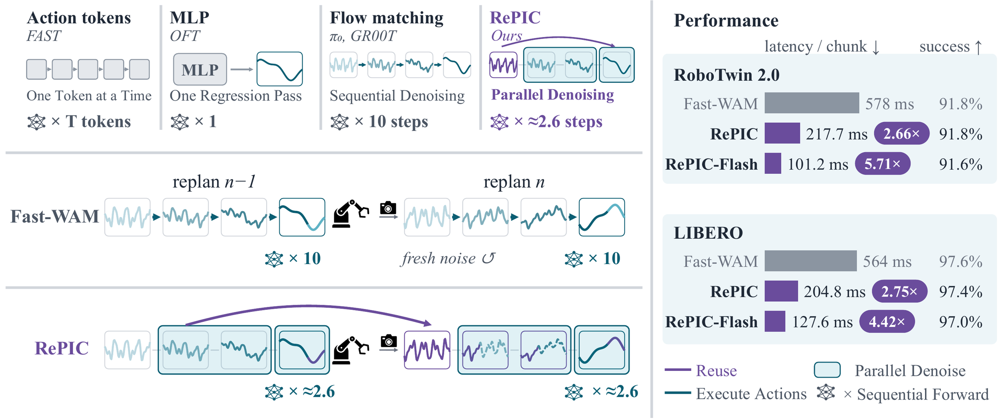
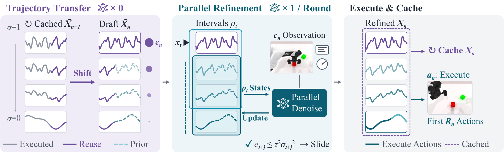
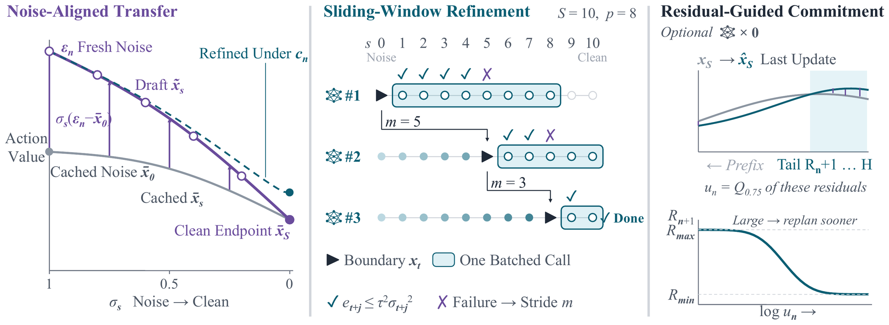
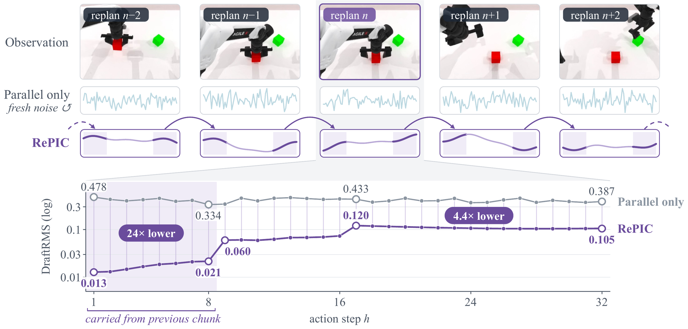
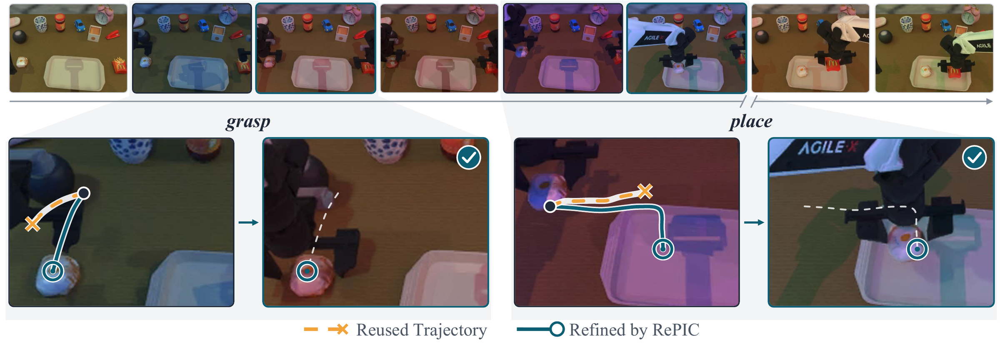
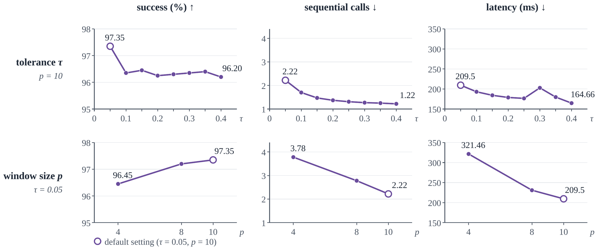
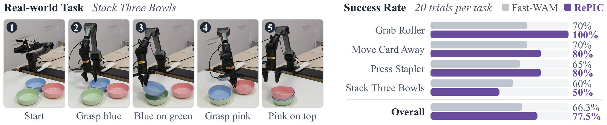

A flow-based robot policy denoises every action chunk from scratch and throws the solver trajectory away at the next replan, although consecutive replans solve nearly the same problem. RePIC keeps that trajectory: it shifts it to the new horizon, re-aligns it to fresh noise with a closed-form correction, and lets the pretrained network refine all states at once. Sequential network calls per chunk drop from 10 to about 2.6.
Reuse the solve, then refine it in parallel

Abstract
Standard samplers for flow-based robot policies generate each action chunk by sequential denoising and discard the solver trajectory at every replan, even though consecutive control cycles solve closely related problems. We introduce RePIC, a training-free sampler that turns this discarded trajectory into the initialization of the next solve. After an action prefix is executed, RePIC shifts the cached trajectory to the new horizon and re-aligns it to fresh noise with a closed-form correction that preserves the clean-action endpoint and needs no network evaluation. The pretrained velocity network then refines all transferred states under the new observation through batched fixed-point updates on the original integration grid, so an accurate initialization is converted into fewer sequential network calls.
On Fast-WAM, RePIC reduces sequential calls per chunk from 10 to 2.2–2.6 and action-generation latency from 578 to 218 ms on RoboTwin 2.0 (2.66×) and from 564 to 205 ms on LIBERO (2.75×) at comparable success; with system optimizations, RePIC-Flash reaches 5.71×. The same sampler accelerates π0.5 and GR00T N1.5 by 1.14× and 1.68× without retraining. Transferred drafts start 24× closer to the serial solution on the carried action steps, and on a physical robot Fast-WAM with RePIC succeeds in 77.5% of trials versus 66.3% for the original sampler.
One replan: transfer, refine, execute

-
Trajectory transfer
Shift the cached trajectory by the executed prefix Rn−1 and re-align it to the fresh noise εn.
0 network calls
-
Parallel refinement
Update a sliding window of p integration intervals with batched fixed-point (Picard) steps. The window advances by the longest stride whose residual stays under τ2σ2, measured on the executed prefix.
1 batched call per round
-
Execute and cache
Execute the first Rn actions and cache the whole refined trajectory. Optionally, the residual on the unexecuted tail picks the next execution length.
0 network calls
Noise-aligned transfer
The cached trajectory belongs to the previous noise realization, while the new replan starts from fresh noise. For every noise level s and action position h, RePIC applies the correction below, where q(h) maps position h to the matching step of the previous chunk (h + Rn−1 for the shifted suffix, h itself for newly exposed positions).
Eq. 7 x̃s,h = x̄s,q(h) + σs ( εn,h − x̄0,q(h) )
At σ = 1 this returns the fresh noise at every position; at σ = 0 the correction vanishes and the mapped clean actions are kept. In between, the cached trajectory keeps its deviation from the straight line between its endpoints. The result is an initialization, not a solution: refinement still evaluates the velocity field under the current observation.
Try the transfer
Move through the 10 integration steps of the Fast-WAM schedule and turn the alignment off to see why shifting alone is not enough.
Illustration with synthetic curves, horizon H = 32, computed with Eq. 6–7 and the S = 10, shift 5 schedule.

A reused trajectory starts close to the answer
We measure how far the initial draft is from the serial Euler solution (DraftRMS) on a RoboTwin 2.0 rollout with a fixed execution length of 24. The 8 steps carried over from the previous chunk start at 0.013–0.021, 24× below the 0.33–0.48 of a cold linear draft; the remaining positions, initialized from same-position states, are still 4.4× closer. A closer draft gives smaller residuals, longer strides and fewer calls.

Reuse supplies only an initialization. Every refinement round evaluates the velocity field under the current observation, so a stale plan gets corrected rather than committed to.

Faster at comparable success
RePIC reduces Fast-WAM latency 2.66× on RoboTwin 2.0 (91.8% success, unchanged) and 2.75× on LIBERO (97.55% to 97.35%). RePIC-Flash adds a CUDA Graph backend on LIBERO and a TensorRT FP16 backend on RoboTwin. On π0.5 and GR00T N1.5 the same sampler gives 1.14× and 1.68× without retraining; the gain depends on the sampler’s share of latency and on the cost of a batched call relative to a single one.
| Method | Size | Clean | Random | Avg. | Latency (ms) | Speed (×) |
|---|---|---|---|---|---|---|
| LingBot-VA | 5.3B | 92.9 | 91.6 | 92.2 | 9356.00 | 0.06 |
| Motus | 8.0B | 88.7 | 87.0 | 87.8 | 2177.00 | 0.27 |
| Fast-WAM (Joint) | 6.0B | 90.8 | 90.3 | 90.6 | 1122.00 | 0.52 |
| Enfold | 3.0B | 91.6 | 91.9 | 91.8 | 253.00 | 2.28 |
| ImageWAM | 8.6B | 93.2 | 93.6 | 93.4 | 351.00 | 1.65 |
| Faster-WAM (FC) | ~6B | 92.8 | 92.3 | 92.6 | 493.00 | 1.17 |
| AHA-WAM | 7.23B | 93.4 | 92.2 | 92.8 | 535.50 | 1.08 |
| Faster-WAM (DoT) | 5.05B | 89.7 | 88.6 | 89.2 | – | – |
| Fast-WAM | 6.0B | 91.9 | 91.8 | 91.8 | 578.00 | 1.00 |
| C3ache | 6.0B | 91.0 | 89.7 | 90.4 | 314.13† | 1.84 |
| RePIC | 6.0B | 91.9 | 91.7 | 91.8 | 217.70 | 2.66 |
| RePIC-Flash | 6.0B | 92.4 | 90.7 | 91.6 | 101.16 | 5.71 |
Success rate in %. Speed is relative to Fast-WAM. † Inferred from the reported speed-up and the reference latency.
| Method | Size | Spatial | Object | Goal | Long | Avg. | Latency (ms) | Speed (×) |
|---|---|---|---|---|---|---|---|---|
| Vision-language-action models | ||||||||
| SmolVLA | 0.45B | 90.0 | 96.0 | 92.0 | 71.0 | 87.25 | 239.00 | – |
| π0.5 | ~3.35B | 98.0 | 98.6 | 96.8 | 90.8 | 96.05 | 70.24 | 1.00 |
| π0.5 + RePIC | ~3.35B | 97.6 | 98.2 | 96.0 | 91.2 | 95.75 | 61.35 | 1.14 |
| GR00T N1.5 | 3.0B | 89.0 | 91.4 | 88.8 | 78.4 | 86.90 | 120.62 | 1.00 |
| GR00T N1.5 + RePIC | 3.0B | 90.0 | 93.2 | 90.4 | 79.0 | 88.15 | 71.60 | 1.68 |
| World action models | ||||||||
| LingBot-VA | 5.3B | 98.5 | 99.6 | 97.2 | 98.5 | 98.45 | 8623.00 | 0.07 |
| Fast-WAM (Joint) | 6.0B | 99.6 | 99.4 | 98.2 | 96.8 | 98.50 | 1146.00 | 0.49 |
| Enfold | 3.0B | 97.0 | 100.0 | 96.8 | 97.4 | 97.80 | 268.00 | 2.10 |
| ImageWAM | 8.6B | 97.0 | 99.4 | 98.2 | 96.8 | 97.85 | 373.00 | 1.51 |
| Faster-WAM (FC) | ~6B | 98.8 | 100.0 | 98.4 | 97.2 | 98.60 | 488.00 | 1.16 |
| Faster-WAM (DoT) | 5.05B | 98.4 | 100.0 | 97.0 | 97.8 | 98.30 | 176.20† | 3.20 |
| Fast-WAM | 6.0B | 98.0 | 99.6 | 97.2 | 95.4 | 97.55 | 563.85 | 1.00 |
| C3ache | 6.0B | 97.6 | 99.6 | 96.0 | 95.2 | 97.10 | 224.64† | 2.51 |
| RePIC | 6.0B | 97.4 | 99.6 | 96.8 | 95.6 | 97.35 | 204.77 | 2.75 |
| RePIC-Flash | 6.0B | 97.4 | 99.4 | 96.4 | 94.8 | 97.00 | 127.63 | 4.42 |
Success rate in %. Speed is relative to the same backbone (VLAs) or to Fast-WAM (WAMs). † Inferred from the reported speed-up and the reference latency.
What each part buys
Ablations on LIBERO with Fast-WAM. A batched call counts as one sequential call, and the cold-start draft call is included. Parallel refinement alone cuts the calls from 10 to 4; reuse brings them to 2.22. RePIC with all ten intervals is also faster than the three-step baseline while keeping 0.75 points more success.
| Method | S | Success | Calls | ms |
|---|---|---|---|---|
| Baseline | 10 | 97.55 | 10.00 | 563.85 |
| Baseline | 5 | 96.90 | 5.00 | 333.00 |
| Baseline | 3 | 96.60 | 3.00 | 236.30 |
| Baseline | 1 | 95.35 | 1.00 | 151.80 |
| Parallel only | 10 | 97.10 | 4.00 | 298.10 |
| RePIC | 10 | 97.35 | 2.22 | 204.77 |
| Draft | Shift | Align | Success | Calls | ms |
|---|---|---|---|---|---|
| No reuse | – | – | 97.10 | 4.00 | 298.10 |
| Endpoint only | ✓ | – | 97.05 | 2.88 | 234.70 |
| Full trajectory | ✗ | ✗ | 96.35 | 3.03 | 245.80 |
| Full trajectory | ✗ | ✓ | 96.40 | 3.01 | 243.90 |
| Full trajectory | ✓ | ✗ | 97.15 | 4.87 | 331.40 |
| RePIC | ✓ | ✓ | 97.35 | 2.22 | 204.77 |

Scope
RePIC applies to deterministic flow samplers whose states at different noise levels can be batched. It trades batched computation and memory (the cache stores (S+1)Hd values) for a shorter sequential path, so we report wall-clock latency next to call counts. It is evaluated under the standard receding-horizon protocol of each benchmark; abrupt observation changes are outside this scope.
On a real robot and in simulation
We deploy Fast-WAM with and without RePIC on an Agilex Piper arm with the same GPU, using the RoboTwin 2.0 checkpoint fine-tuned on 400 real demonstrations mixed with simulation data. With RePIC the policy succeeds in 62 of 80 trials (77.5%) versus 53 (66.3%) for the original sampler, with higher success on three of four tasks. On hardware the control cycle is dominated by executing the action prefix, so faster generation shortens the pause at each replan rather than the task duration; at 20 trials per task the difference is within trial-to-trial variation.
Supplementary demo: Fast-WAM (left) and RePIC (right), synchronous inference without post-processing, real time.
Grab Roller
Fast-WAM
RePIC
Success over 20 trials: 70% → 100%
Move Card Away
Fast-WAM
RePIC
Success over 20 trials: 70% → 80%
Stack Three Bowls
Fast-WAM
RePIC
Success over 20 trials: 60% → 50%
Each clip is a single trial. The fourth task, Press Stapler, went from 65% to 80%.

RoboTwin 2.0 rollouts
Head-camera view of successful rollouts.
Cite RePIC
@misc{wu2026repic,
title={Don't Throw Away the Solution: Training-Free Acceleration of Flow-Based Robot Policies},
author={Xianjin Wu and Xian Li and Jianxiang Tang and Dingkang Liang and Xiang Bai},
year={2026},
note={Preprint}
}
The main branch is built on Fast-WAM; please cite it as well.